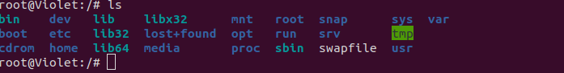

目录结构
Linux下，万物皆为文件。

实例

bin目录（user/bin user/local/bin）
binary的简称
这里存放最常用的命令
sbin（/user/sbin，/user/local/sbin）
s就是super user的意思，这里存放系统管理员使用的系统管理程序
/home
存放普通用户的主目录，在Linux中每个用户都有自己一个目录，该目录通常为用户名，进行命名。
/root
该目录为系统管理员的主目录
/lib
系统开始所需要的最基本的动态连接共享库，起作用类似于DLL文件
/lost + found
该目录一般为空，当系统非法关机，这里就存放了一些文件
etc
所有系统管理所需要的配置文件和子目录
/user
许多应用程序和文件都放到这个文件目录下。
/boot
存放一些启动Linux时使用的一些核心文件，包括一些连接文件和镜像文件
/dev
相当于设备管理器
/media
将识别的文件挂载到这个目录下
/mnt
系统提供该目录是为了让用户临时改在别的文件系统，我们可以通过该目录获得到外部存储的一些信息
opt
给主机安装而外的软件所使用的目录。
var
这个目录存放着不断扩充着的东西，我们习惯将经常修改的目录放在这个目录下，比如各种日志文件
vi与vim编辑器
正常模式
可以删除字符，或者删除整行来操作文件内容。
插入模式
按下i、I、o、O、A、a、r、R中任意一个字母，即可进入插入模式
命令模式
可以提供相关指令，比如读取，存盘，替换，离开vim，显示行号等。
输入ese在输入：就可以进入命令行模式。我们可以使用，:wq 可以保存。
各个模式之间的切换
命令行 ==> （vim 文件名） 一般模式 ==> (i/I) 编辑模式 ==》 （esc）一般模式
一般模式==》（：）命令模式 ==> (esc)一般模式
命令模式下的指令
:wq 保存修改
:q 直接退出，不保存修改
快捷键使用
- 拷贝当前行：yy + p 复制某行（一般模式）
4yy + p 复制4行
- 删除当前行：dd删除某行（一般模式）
4dd删除4行
在文件中查找某个单词：/+（所要查找的单词），n表示查询下一个
设置文件的行号，取消文件行号：（:set nu / :set nonu）
编辑文件，在一般模式下，使用快捷键到该文件的最末行（G），首行（gg）
撤销动作，进入一般模式 u
在一般模式下，将光标移动到第20行 20 + shift +g
用户管理
添加
useradd 用户名
默认用户的家目录在/home
useradd -d 指定目录 新的用户名
useradd -d /home/test/hello violet
设置密码
passwd 用户名
补充： pwd 显示当前用户所在目录
删除用户
userdel 用户名
这种方式会保存目录
userdel -r 用户名
这种方式，会将目录也删除。
查询用户信息
id 用户名
切换用户
su - 切换用户名
返回原来的用户使用exit，或者logout即可
查看当前用户信息
whoami
用户组
类似于域。
添加组
groupadd 组名
删除组
groupdel 组名
添加用户直接上组
useradd -g 用户组 用户名
修改用户的组
usermod -g 用户组 用户名
用户和组相关文件
/etc/passwd
/etc/shadow
/etc/group
运行等级
0关机
1单用户（找回丢失密码）
2多用户状态没有网络服务
3多用户有网络服务
4系统未使用保留给用户
5图形化界面
6系统重启
切换
使用 init [1-6] 进行切换
切换到多用户网络
systemctl set-default multi-user.target // 重启后仍然为多用户网络连接界面
init 3
切换到多用户图形
systemctl set-default graphical.target // 重启后仍然为图形化界面
init 5
查看用户级别
systemctl get-default
找回用户密码
太麻烦了，先不搞了。具体百度即可。
帮助指令
man
man [命令或者配置文件]（功能描述：获得帮助信息）
案例：man ls
ls
ls -a
显示全部文件，包括隐藏文件。隐藏文件，以.开头
ls -l
显示文件的详细信息
ls -a -l
显示包括隐藏文件的全部文件的详细信息。
ls -lh
按照人习惯的范式显示
help
shell 内置命令的详细信息
help [指令]
文件目录指令
pwd
显示当前工作目录的绝对路径
ls
显示当前目录的内容信息
上面已经讲过了，这里不在赘述。
cd指令
基本语法
cd [参数] (切换到指定目录)
cd ~ 或者cd 返回自己的家目录
cd .. 返回到当前目录的上一级目录
mkdir
用于创建目录
基本语法
mkdir [选项] 要创建的目录
常用选项 -P : 创建多级目录
案例：
创建一个目录 /home/test
mkdir /home/test
创建一个多级目录 /home/test/test
mkdir -p /home/test/test
rmdir
rmdir删除空目录
基本语法
rmdir [选项] 要删除的空目录
应用实例
删除一个目录 /home/test
使用细节：
如果删除的不是空目录，那么无法删除
提示：如果删除非空目录则需要 rm -rf 尽量别用
cp拷贝指令
cp 指定拷贝文件到指定目录
基本语法
cp [选项] source dest
常用选项
-r 递归复制真个文件夹
应用实例
案例1： 将/home/hello.txt 拷贝到 /home/bbb 目录下
root@Violet:/home# vim hello.txt
// 进入后 i插入模式，写入hello world。esc退出到正常模式。:wq 保存。
root@Violet:/home# mkdir bbb
root@Violet:/home# cp hello.txt bbb
案例2： 递归复制整个文件夹
root@Violet:/home/bbb# mkdir ccc
root@Violet:/home/bbb# cd ..
root@Violet:/home# mkdir cc
root@Violet:/home# cp -r bbb cc
强制覆盖
\cp r /home/bbb /opt
不知道为啥，我的ubuntu没有提示，是否覆盖
rm
rm指令移除文件或目录
基本语法
rm [选项] 要删除的文件或目录
常用选项
-f 强制删除不提示
-r 递归删除整个文件夹
实例
案例1：将/home/hello.txt删除
rm /home/hello.txt
案例2：递归删除整个文件夹 /home/bbb
rm -r /home/bbb
mv指令
基本语法
mv oldNameFile newNameFile // 重命名
mv /temp/movefile/targetFolder// 移动文件
实例
案例1：将/home/cat.txt 文件重新命名为 pig.txt
vim cat.txt
:wq
mv cat.txt pig.txt
案例2：将/home/pig.txt 文件移动到 /root 目录下
mv /home/violet/pig.txt / // 相当于剪切
案例3：将目录整个移动
mv /home/bbb /
nl
查看文件内容，并显示行号
基本语法
nl [文件名]；
cat
查看文件内容
基本语法
cat [选项] 要查看的文件
常用选项
-n: 显示行号
应用实例
案例1：查看/etc/profile 文件内容，并显示行号
cat -n /etc/profile
为了浏览方便，一般会加上管道命令 | more
more
基于vi编辑器的文本过滤器，它是以权柄范式暗夜显示文本文件的内容。more指令中内置了若干快捷键（交互的指令）
Enter 向下n行，需要定义。默认为1行
Ctrl+F 向下滚动一屏
空格键 向下滚动一屏
Ctrl+B 返回上一屏
= 输出当前行的行号
：f 输出文件名和当前行的行号
V 调用vi编辑器
!命令 调用Shell，并执行命令
q 退出more
基本语法
more 要查看文件
less指令
用来分配查看呢文件内容，它的功能与more类似，但是比more更强大，支持各种显示终端。less指令在显示文件内容是，并不是一次将整个文件加载后才显示，而是根据显示需要加载内容，对于大型文件有更大的效率。
基本语法
less 要查看的文件
操作
-b <缓冲区大小> 设置缓冲区的大小
-e 当文件显示结束后，自动离开
-f 强迫打开特殊文件，例如外围设备代号、目录和二进制文件
-g 只标志最后搜索的关键词
-i 忽略搜索时的大小写
-m 显示类似more命令的百分比
-N 显示每行的行号
-o <文件名> 将less 输出的内容在指定文件中保存起来
-Q 不使用警告音
-s 显示连续空行为一行
-S 行过长时间将超出部分舍弃
-x <数字> 将"tab"键显示为规定的数字空格
/字符串：向下搜索"字符串"的功能
?字符串：向上搜索"字符串"的功能
n：重复前一个搜索（与 / 或 ? 有关）
N：反向重复前一个搜索（与 / 或 ? 有关）
b 向上翻一页
d 向后翻半页
h 显示帮助界面
Q 退出less 命令
u 向前滚动半页
y 向前滚动一行
空格键 滚动一页
回车键 滚动一行
[pagedown]： 向下翻动一页
[pageup]： 向上翻动一页
echo指令
echo输出内容到控制台
基本语法
echo [选项][输出内容]
应用实例：
案例：使用echo输出输出环境变量
echo $HOSTNAME
案例：输出helloworld
echo "hello world"
head
head用于显示文件开头部分内容，默认情况下显示文件的前10行
基本语法
head 文件
head -n 5 文件 // 查看文件前5行内容，5可以是任意行数
应用实例
查看/etc/profile 的前5行代码
head -n 5 /etc/profile
tail
显示文件尾
语法
tail [选项] [文件]
tail -f [文件] // 实时监控文件
> 和 >>指令
输出重定向 和 >>追加
基本语法
ls -l >文件（列表文件写入文件a.txt 覆盖写入）
ls -al >> 文件 （列表内容追加文件aa.txt）
cat 文件1 > 文件2 （将文件1的内容覆盖到文件2）
echo “内容” >> 文件
应用实例
案例1：将/home 目录喜爱的文件列表 写入/home/info.txt中
ls -l > /home/info.txt
案例2: 将当前的日历信息追加到 /home/mycal文件中
cal >> /home/mycal
ln软链接
软链接也成为符号连接，类似于windows中的快捷方式，主要存放链接其他文件的路径
基本语法
ln -s [原文件][软链接名]
案例
为root建立软链接
ln -s /root /home/myroot
history
查看已经执行过的历史命令，也可以执行历史指令
基本语法
history
应用实例
想要查看最近10个历史指令
history 10
执行历史标号5的指令
!5
时间指令
date
显示当前日期
(1) date // 显示当前时间
(2) date + %Y // 显示当前年份
(3) date + %m // 显示当前月份
(4) date + %d // 显示当前是哪一天
(5) date "%Y-%m-%d %H:%M:%S" // 显示年月日时分秒
应用实例
案例1：显示当前时间信息
date
案例2：显示当前时间年月日
date "+%Y-%m-%d"
案例3：显示当前时间年月日时分秒
date "+%Y-%m-%d %H-%M-%S"
设置时间
date -s "时间"
实例
设置系统当前时间
date "2020-11-03 20:02:10"
cal
基本语法
cal [选项]
应用实例
实例1：显示当前日历
cal
实例2：显示2021年日历
cal 2021
搜索查找类
find指令
find指令从指定目录向下递归地遍历各个子目录，将满足条件的文件或者目录显示在终端
基本语法
find [查找范围] [选项]
选项说明
-name <查找方式> 按照指定的文件名查找模式查找文件
-user <用户名> 查找属于指定用户名所有文件
-size <文件大小> 按照指定的文件大小查找文件
应用实例
案例1：按文件名：根据名称查找/home 目录下的hello.txt文件
find /home -name hello.txt
案例2：按照拥有这：查找/opt 目录下，用户名为nobody的文件
find /opt -user nobody
案例3：查找整个linux系统喜爱大于200M的文件 （+n 大于 -n小于 n等于）(单位 K，M，G)
find / -size + 200M
locate指令
locate指令卡伊快速的定位文件路径，速度很快。
利用实现建立的系统中所有文件名称以及路径的locate数据库，实现快速定位给定的文件。locate无需遍历整个文件系统，所以查询速度快。为了保证准确性，管理必须定期更新locate时刻。
基本语法
locate 搜索文件
特别说明
由于locate指令基于数据库查询，所以第一次运行前，必须使用updatedb指令建立locate数据库
应用实例
案例1：请使用locate指令快速定位hello.txt文件所在目录
locate hello.txt
补充
查找指令在那个目录下。
which + 指令
grep
过滤查找，管道符|，表示将前一个命令的处理结果输出传递给后面的命令处理。
基本语法
grep [选项] 查找内容 源文件
常用选项
-n 显示匹配行以及行号
-i 忽略字母大小写
应用实例
请在hello.txt中，查找’yes’所在的行，并显示行号
写法1：
cat /home/hello.txt | grep "yes" -n
写法2：
cat -n "yes" /home/hello.txt
通配符查找
通配符规则：
* 代表任意字符(0到多个)
？ 代表一个字符
[ ] 中间为字符组合，仅匹配其中任一一个字符
实例
案例1：查找以v开头的文件
find v*.txt /home/violet